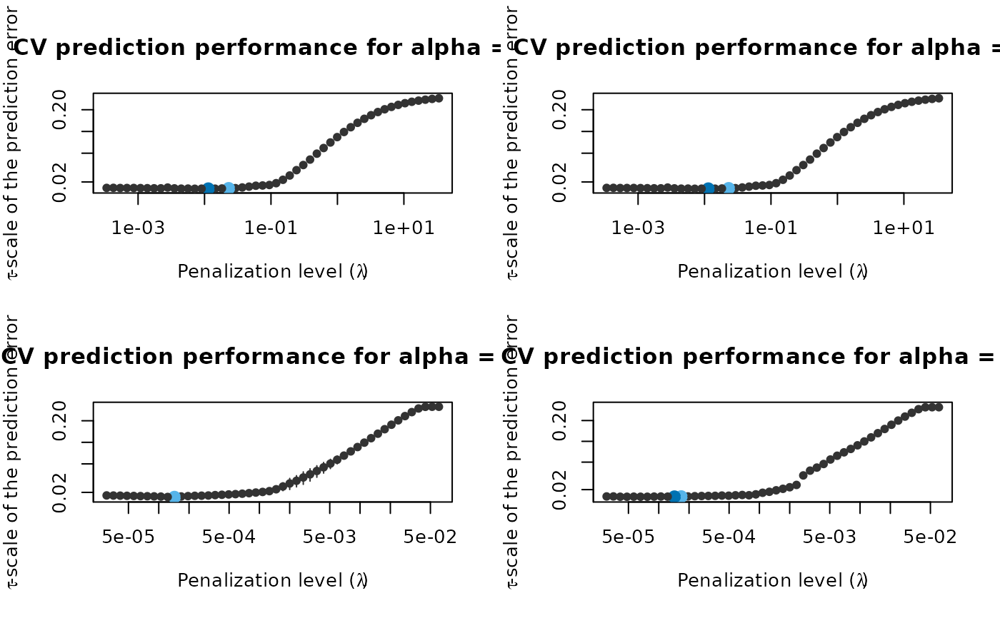

Perform (repeated) K-fold cross-validation for pense().
adapense_cv() is a convenience wrapper to compute adaptive PENSE estimates.
pense_cv( x, y, standardize = TRUE, lambda, cv_k, cv_repl = 1, cv_metric = c("tau_size", "mape", "rmspe"), fit_all = TRUE, cl = NULL, ... ) adapense_cv(x, y, alpha, alpha_preliminary = 0, exponent = 1, ...)
Arguments
| x |
|
|---|---|
| y | vector of response values of length |
| standardize | whether to standardize the |
| lambda | optional user-supplied sequence of penalization levels. If given and not |
| cv_k | number of folds per cross-validation. |
| cv_repl | number of cross-validation replications. |
| cv_metric | either a string specifying the performance metric to use, or a function to evaluate prediction errors in a single CV replication. If a function, it is called with a single numeric vector of prediction errors and must return a scalar number. |
| fit_all | If |
| cl | a parallel cluster. Can only be used if |
| ... | Arguments passed on to
|
| alpha | elastic net penalty mixing parameter with \(0 \le \alpha \le 1\). |
| alpha_preliminary |
|
| exponent | the exponent for computing the penalty loadings based on the preliminary estimate. |
Value
a list with components:
lambdathe sequence of penalization levels.
cvresdata frame of average cross-validated performance.
cv_replicationsmatrix of cross-validated performance metrics, one column per replication. Rows are in the same order as in
cvres.callthe original call.
estimatesthe estimates fitted on the full data. Same format as returned by
pense().
the object returned by adapense_cv() has additional components
preliminarythe CV results for the preliminary estimate.
penalty_loadingsthe penalty loadings used for the adaptive PENSE estimate.
Details
The built-in CV metrics are
"tau_size"\(\tau\)-size of the prediction error, computed by
tau_size()(default)."mape"Median absolute prediction error.
"rmspe"Root mean squared prediction error.
adapense_cv() is a convenience wrapper which performs 3 steps:
compute preliminary estimates via
pense_cv(..., alpha = alpha_preliminary),computes the penalty loadings from the estimate
betawith best prediction performance byadapense_loadings = 1 / abs(beta)^exponent, andcompute the adaptive PENSE estimates via
pense_cv(..., penalty_loadings = adapense_loadings).
See also
pense() for computing regularized S-estimates without cross-validation.
coef.pense_cvfit() for extracting coefficient estimates.
plot.pense_cvfit() for plotting the CV performance or the regularization path.
Other functions to compute robust estimates with CV:
pensem_cv(),
regmest_cv()
Other functions to compute robust estimates with CV:
pensem_cv(),
regmest_cv()
Examples
# Compute the adaptive PENSE regularization path for Freeny's # revenue data (see ?freeny) data(freeny) x <- as.matrix(freeny[ , 2:5]) ## Either use the convenience function directly ... ada_convenience <- adapense_cv(x, freeny$y, alpha = 0.5, cv_repl = 2, cv_k = 4) ## ... or compute the steps manually: # Step 1: Compute preliminary estimates with CV preliminary_estimate <- pense_cv(x, freeny$y, alpha = 0, cv_repl = 2, cv_k = 4) plot(preliminary_estimate, se_mult = 1)# Step 2: Use the coefficients with best prediction performance # to define the penality loadings: prelim_coefs <- coef(preliminary_estimate, lambda = 'min') pen_loadings <- 1 / abs(prelim_coefs[-1]) # Step 3: Compute the adaptive PENSE estimates and estimate # their prediction performance. ada_manual <- pense_cv(x, freeny$y, alpha = 0.5, cv_repl = 2, cv_k = 4, penalty_loadings = pen_loadings) # Visualize the prediction performance and coefficient path of # the adaptive PENSE estimates (manual vs. automatic) def.par <- par(no.readonly = TRUE) layout(matrix(1:4, ncol = 2, byrow = TRUE)) plot(ada_convenience$preliminary) plot(preliminary_estimate) plot(ada_convenience) plot(ada_manual)par(def.par)